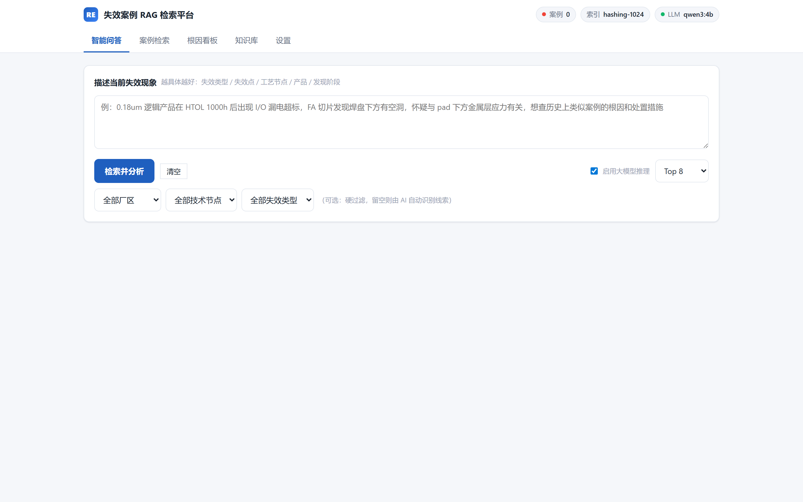

Live Preview · 本地原型
失效案例智能检索平台
历史失效案例与分析报告沉淀为本地知识库：描述异常现象即可检索相似案例、还原时间线、汇总根因线索。以下截图来自本机真实运行的服务。

怎么看这张图
上方是提问入口，中部是检索结果与根因线索，下方是知识库的文件与案例浏览。所有数据留在本机，模型与索引均为离线部署，适合内网与涉密场景。
本页为本地运行原型的界面截图；完整交互演示需本机环境，欢迎联系交流。
Live Preview · 本地原型
历史失效案例与分析报告沉淀为本地知识库：描述异常现象即可检索相似案例、还原时间线、汇总根因线索。以下截图来自本机真实运行的服务。

上方是提问入口，中部是检索结果与根因线索，下方是知识库的文件与案例浏览。所有数据留在本机，模型与索引均为离线部署，适合内网与涉密场景。
本页为本地运行原型的界面截图；完整交互演示需本机环境，欢迎联系交流。